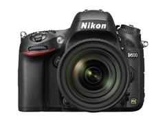

Nikon D600
Power your passion with the Nikon D600. As the lightest and most compact* Nikon full-frame- DSLR, it offers stunning sharpness and brilliant image quality.
Capture everything from lush landscapes to still portraits with its 24.3 effective megapixel FX-format sensor, with an ultra-fast EXPEED 3 image processing engine and a versatile ISO range from 100 to 6400. It also provides a true cinematic experience with full HD video recording. The D600 brings you greater flexibility and mobility, taking photography to the next level.
*Approximately 760g for body only
$2,099.95 Body only
$2,699.95 24-85mm VR Lens Kit
- Image-processing engine EXPEED 3, the same as used for the D4 and D800 series, realizes superior high-speed processing performance.
- Wide ISO sensitivity range ISO 100 to 6400* at normal setting that handles various degrees of brightness.
- * Expandable to ISO 50 equivalent or ISO 25600 equivalent.
- Approx. 0.13 s* start-up time and approx. 0.052 s* shutter-release time lag. High-speed continuous shooting at approx. 5.5 fps*.
- * Based on CIPA Guidelines.
- Newly developed glass pentaprism optical viewfinder with approx. 100% frame coverage that enables a grid line display.
- SD memory card double slots compatible with high-speed SDXC and UHS-I.
- Approx. 921k-dot, wide-viewing angle, 8-cm (3.2-in.) LCD monitor with reinforced glass that reduces the surface reflection of each part to deliver clear visibility with its integrated structure of glass and panel.
- Multi-area mode Full HD D-Movie that delivers two selectable movie formats.
- Virtual horizon that detects both "pitching" and "rolling" directions.
- Compatible with the WU-1b Wireless Mobile Adapter (optional) that enables remote shooting and transmission of images to a smart device [NEW].
- MB-D14 Multi-Power Battery Pack (optional) that enables smooth vertical shooting [NEW].